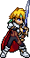
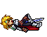

System Animations
Progress: 5/27
[] Entrance:
[] Idle:
[] Run: 
[] Walk:
[ ] Jump:
[ ] Double Jump:
[] Fall:
[] Crouch:
[] Shield:  (Sato1999)
[ ] Roll Dodge:
[ ] Spot Dodge:
[ ] Air Dodge:
[] Hurt 1:
[ ] Hurt 2:
[ ] Hurt 3:
[] Downed/Dead: 
[ ] Launched:
[ ] Dizzy:
[ ] Helpless:
[ ] Tumbble:
[ ] Swimming:
[ ] Landing:
[] Taunt: 
[] Win: (Same as taunt)
(Same as taunt) [ ] Lose:
[] Edge Climb:
[ ] Tech:
Moveset
Progress 1/??
Tilts
[ ] Jab/Combo
[ ] Getup Attack
[ ] Ledge Attack
[ ] Up Tilt
[ ] Side Tilt
[ ] Down Tilt
[ ] Dash Attack
Smash
[ ] Side Smash: Arte: Beast
[ ] Up Smash
[ ] Down Smash
Aerials
[ ] Neutral Air
[ ] Forward Air
[ ] Back Air
[ ] Down Air
Specials
[ ] Neutral Special (short): Arte: Distortion Blade
[] Neutral Special (long, ground):  Arte: Demon Fang
Arte: Demon Fang
Arte: Demon Fang [] Neutral Special (long, air): Arte: Hell Pyre
[ ] Side Special (short): Arte: Swallow Dance
[ ] Side Special (long): Arte: Lightspear (ToP's is different from ToS onward)
[ ] Up Special (short): Tiger Blade
[ ] Up Special (long): Rising Phoenix
[ ] Down Special:
Target change. Cycle through players as targets or none. If close to target, cless will use close range artes. If far from target, Cless will use the long range arte. If no target, Cless will use the long range version of an arte.
Grabs
Item Related
[ ] Heavy Item hold
[ ] Item Batter
[ ] Item Throw (forward)
[ ] Item Throw (up)
[ ] Item Throw (down)
[ ] Item Use
[ ] Item Shoot